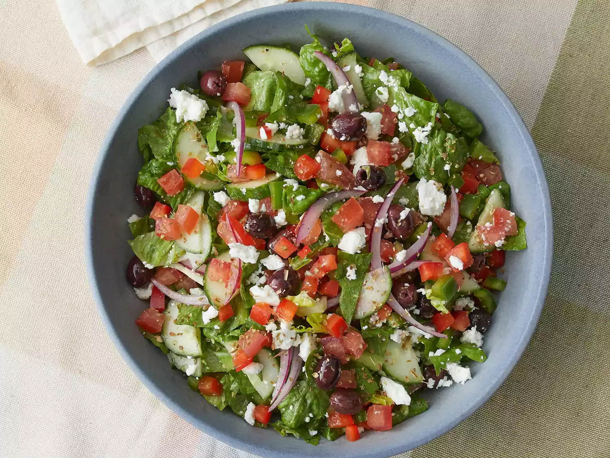

Greek Salad

Delicious Greek Salad
This Greek salad recipe is perfect for summer when tomatoes and cucumbers taste best.
The dressing is nice and tangy, and when mixed with romaine and feta — this salad tastes incredible!
Ingredients
- 1 head romaine lettuce- rinsed, dried and chopped
- 1 cucumber, sliced
- 2 large tomatoes, chopped
- 1 (6 ounce) can pitted black olives
- 1 green bell pepper, chopped
- 1 red bell pepper, chopped
- 1 red onion, thinly sliced
- 1 cup crumbled feta cheese
- 6 tablespoons olive oil
- 1 lemon, juiced
- 1 teaspoon dried oregano
- ground black pepper to taste
Directions
- Combine romaine, cucumber, tomatoes, olives, bell peppers, and red onion in a large bowl; sprinkle with feta cheese.
- Whisk olive oil, lemon juice, oregano, and black pepper together in a small bowl. Pour dressing over salad, toss well to combine, and serve..
- Pour dressing over salad, toss well to combine, and serve.